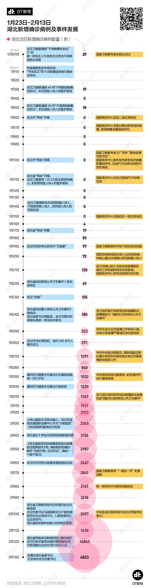
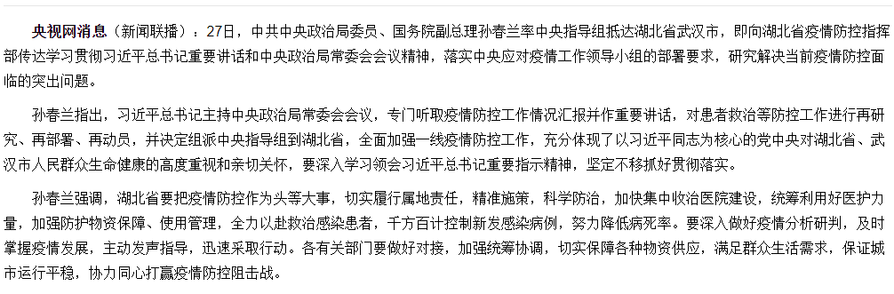
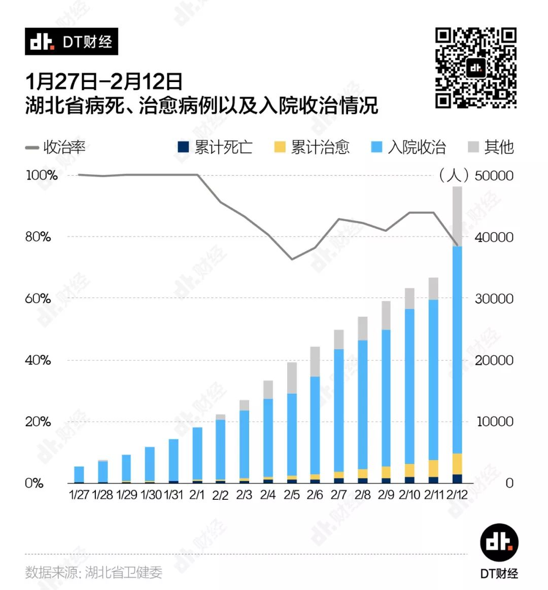

数说疫情0215：非湖北地区新增病例5日后有望清零，湖北进入总攻阶段
原文链接 备份链接 文 |《财经》数据研究员 徐进 图 |《财经》视觉中心 编辑 | 谢丽容 1. 全国累计新增确诊病例 图1 由图可见，国内非湖北地区正趋于平缓。 2. 新增病例：国内非湖北地区继续坚定下降，有望近日归零 图2 国内 …
以下文章来源于DT财经 ，作者持续更新的DT君
[
DT财经
第一财经旗下数据研究型新媒体，用大数据解读消费社会和商业图景，连接数据、机构和人群。](#)
15.02.2020

本文字数：2814，阅读时长大约5分钟
导读：我们尽力梳理和分析了疫情爆发以来湖北的公开信息与数据，应该可以帮助大家快速了解湖北现在的处境、接下来的挑战，以及可见的希望。
作者 | 罗钰婧、何书瑶
数据 | 罗钰婧、张倍迪、高斌
设计 | 邹磊、赵芸
来源 | DT财经（ID：DTcaijing）
2月13日一大早，大家醒来的第一件事，应该都是收到了湖北新增14840例新冠肺炎确诊病例的推送消息；随后，接连两天下降，2月15日早上，这个数字又降到了2420。
从这几天的新闻中，各位想必也了解，新增病例数飙升主要是因为首次将临床诊断病例纳入统计，并且可参照确诊病例治疗。
具体来说这里的临床诊断标准是：
只要符合“发热和/或呼吸道症状”、“发病早期白细胞总数正常或降低，或淋巴细胞计数减少”这两条临床表现，便可考虑为疑似病例。疑似病例只要具有肺炎影像学特征者，为临床诊断病例。
新增病例一日破万的数据虽然像一座大山压在人们心头，但也实实在在地告诉我们，那些曾经在名单之外的患者终于得到了确诊，可以接受治疗。
当然，还有很多人不解，数字剧烈波动的湖北现在到底是个什么情况。
跟各位一样，我们没办法测算湖北还有多少病人需要确诊，也很难预判接下来的数字会继续飙升，还是大幅回落。
但是，我们尽力梳理和分析了疫情爆发以来湖北的公开信息与数据，应该可以帮助大家快速了解湖北现在的处境、接下来的挑战，以及可见的希望。

湖北疫情发展的几个转折点
我们先来回顾一下，湖北的新增确诊病例数量变化，以及对应各个时间节点上的事件。
各位对于武汉和湖北在这场疫情前期的“遗憾”表现应该都有所了解，比如说，尽管12月31日已经有国家卫建委专家组抵达武汉，但“未见明显人传人”、“疫情可防可控”、“不排除有限人传人”一直延续到了湖北省“两会”闭幕。
下图的盘点中，也可以清晰地看出各个遗憾点，这里我们不再赘述。

我们主要关心几个与新增确诊病例数量上升相关的转折点。
可以看到，湖北省新增确诊病例的数字变化，除了与核酸检测试剂的研发与生产进度有关外，与有关部门疫情防控力度不断加强也息息相关。
1月19日，国家卫健委宣布开始下放检测试剂盒；1月20日，经国务院批准同意，国家卫健委将新冠肺炎纳入法定传染病，钟南山通过央视确认新冠病毒人传人——这一天之后，新冠肺炎新增确诊病例数开始达到三位数。
1月25日，党中央成立应对疫情工作领导小组，向湖北等疫情严重地区派出指导组；1月27日，中共中央政治局委员、国务院副总理孙春兰率中央指导组抵达湖北。1月30日，黄冈市卫健委主任唐志红被免职；2月4日，湖北省红十字会3名领导因渎职被问责。
这期间，湖北的每日新增确诊病例数开始上升至四位数。

▲图片来源：央视网
在2月4日新华社对中央指导组的报道中，提到了“应收尽收”。

▲图片来源：新华网
2月5日，《湖北省新型冠状病毒感染肺炎疫情防控指挥部令》提出确保疑似和确诊病例“应收尽收、应治尽治”。从之后的公开报道来看，这也是湖北这段时间以来防控工作的重点。
在这期间，随着湖北省卫健委领导免职、湖北省委书记和武汉市委书记调任，湖北新增确诊病例数量呈现出“W型”的波动，在2月12日更是因为改变标准而骤增。
这个数字飙升的同时，我们可以看到：2月11日，孙春兰在实地查看隔离观察点和方舱医院时指出，宁可让床等人，也不要让人等床；在2月12日的武汉疫情防控指挥部会议上，中央指导组副组长陈一新判断，武汉感染者底数还没有完全摸清，蔓延扩散的规模也没有较为精准的估计预测。据有关方面推算，武汉潜在被感染的基数可能还比较大。
流行性传染病的防控有三把刀——控制传染源、切断传播途径和保护易感人群。只有每把刀都落到实处，才有可能以最快的速度控制住它的流行。
所以，我们可以认为，2月12日这个飙升的数字，是疫情防控的又一个转折点。
湖北面临的困境
但我们也要认识到，即便有向好的迹象，湖北现在的防控工作还是很难。
我们这里要继续说一下重症率和收治率这两个数字。
从1月23日到2月11日，湖北省内的滚动重症率走向大致呈“W”型。在疫情爆发早期的1月27日前后，湖北省的重症率出现第一次高峰。由于当时核酸检测试剂不足，只能供症状明显的患者使用，因而重症率较高。2月初，湖北的重症率开始降低，但也维持在15%左右。
但如果与湖北省外的数据相比，这个数字还是偏高很多。
到目前为止，湖北外地区的重症率虽然略有波动，但已连续多日低于10%，而且还处于下降的轨道上。即使是在2月12日，由于湖北省将临床病例纳入确诊病例导致累计病例大幅增加，湖北的重症率依旧有14.7%，比湖北外地区的数据高出6.5个百分点。
而且，确证病例大幅上升背后，还有收治能力难以匹配的困境。
这里，我们还计算了另外一个数据，入院收治率。
从1月27日开始，湖北省卫健委开始公布在院治疗病例的数量。通过确诊病例、死亡病例、治愈病例和在院治疗病例的数量，我们可以计算出确诊但未能入院患者的数量。再结合现有确诊病例数量，我们可以算出湖北省的确诊病人入院收治率。
在湖北省公开入院收治人数的前几天，我们可以看到，官方公布的收治率连续5天达到100%。在2月1日，人民网报道称：截至1月31日23时，武汉23家定点医院仍有空床位389个。这也再次证明了收治率一度达到了100%。

但从2月1日起，床位告急，收治率快速下跌。在2月5日这一天，收治率已经下滑到72.6%。
不过，之后得益于火神山、雷神山和一系列方舱医院的建立和改造，让床位数有了一定增长，收治率也开始走高稳定在88%左右。
2月12日，由于统计标准的改变，收治率一夜回到2月初。这也意味着，虽然有更多病人获得确诊，但湖北仍有至少2成、近万名病人无法在医院得到有效的治疗。
不管是偏高的重症率还是偏低的收治率，都指向一件事，医疗资源严重不足。
挑战到底有多大？
湖北省目前的收治率为77.5%，但其实省内各个城市的情况有所不同。
在湖北省12个地级市中，我们目前只找到了黄石市、十堰市、襄阳市、孝感市、荆州市和黄冈市六个城市的相关数据。除了孝感市的收治率为98.7%，其他5个城市都达到了100%的收治率。
然而，最核心的武汉市却没有公布入院收治人数，从湖北其他城市及湖北省的收治率中，我们大致可以推断出，武汉的收治情况并不乐观。
我们从床位数量和确诊人数的匹配也能看出。
2月12日的数据显示，武汉市累计报告病例32994例，累计死亡1036例，累计治愈出院1915例，那么现阶段需要收治的病例超过3万例。
根据武汉市卫健委的数据，我们统计了2月1日以来武汉市定点医院的开放床位数量变化。截至2月12日，武汉市定点医院用于收治新冠肺炎患者的开放床位达到14269张。自2月5日以来陆续投用的11个方舱医院，目前开放了6929张床位。

也就是说，武汉市目前所有方舱医院和定点医院的开放床位为21198张——以此来粗略计算武汉市的收治率，结果并不让我们轻松。
这意味着，通过修订诊断分类，帮助更多病患得到确诊，湖北省走出了加快患者及早接受规范治疗的第一步。但在这之后，湖北，尤其是武汉，仍要面对医疗资源的巨大挑战。
尽管如此，我们最后还是要强调一下从数据变化里看到的希望——2月以来，武汉的床位数量一直在快速增长：2月1日时，武汉市定点医院开放床位数仅为6754张，现在已经是当时的2.1倍。而且，方舱医院的扩容工作还在进行中。根据人民日报报道，11家方舱医院的计划床位将达到9029张。
我们期待，在下一次关注收治率这个数字时，它已经接近100%。


原文链接 备份链接 文 |《财经》数据研究员 徐进 图 |《财经》视觉中心 编辑 | 谢丽容 1. 全国累计新增确诊病例 图1 由图可见，国内非湖北地区正趋于平缓。 2. 新增病例：国内非湖北地区继续坚定下降，有望近日归零 图2 国内 …
原文链接 备份链接 文 |《财经》数据研究员 徐进 图 |《财经》视觉中心 编辑 | 谢丽容 1. 新增病例：国内非湖北地区下降态势坚定 2月13日0—24时，全国新增确诊病例5090例，国内非湖北地区已经连续十天下降，超过两个平均潜伏 …
原文链接 备份链接 *************▲*************2月2日，武汉大学中南医院影像科主任徐海波教授（白衣者）和同事查看患者的CT检查影像。 （新华社/图） 全文共1150字，阅读大约需要3分钟。 武汉确诊患者单日 …
原文链接 备份链接 图片来源：图虫 记者：潘金花 “ 新加坡卫生部长说，“健康的人戴口罩，往往会给我们一种错误的安全感。” ” 新加坡最大的商业银行星展银行（DBS）12日证实，该银行一名职员确诊感染新型冠状病毒。截至当天中午，新加坡确诊 …
原文链接 备份链接 市场反馈认为，公共卫生事件对经济的影响有限；在应对疫情的关键时刻，政治和金融市场应对疫情展示出截然不同的态度 文 |《财经》特派记者 金焱 发自华盛顿 编辑 | 苏琦 2月11日，世界卫生组织通过社交媒体推特发布其确定 …